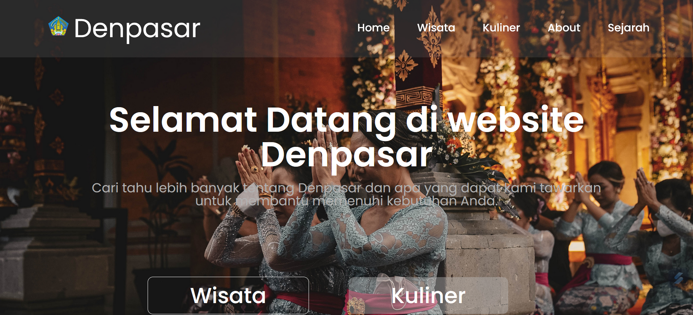
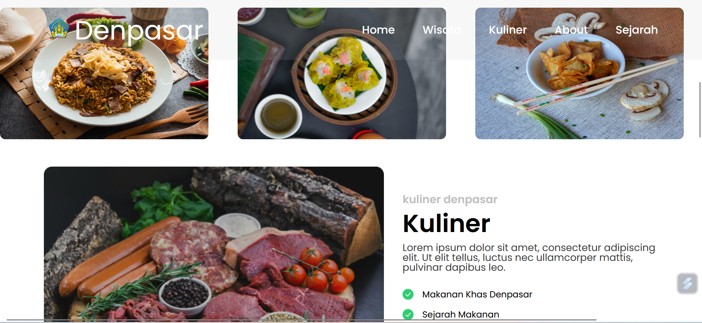
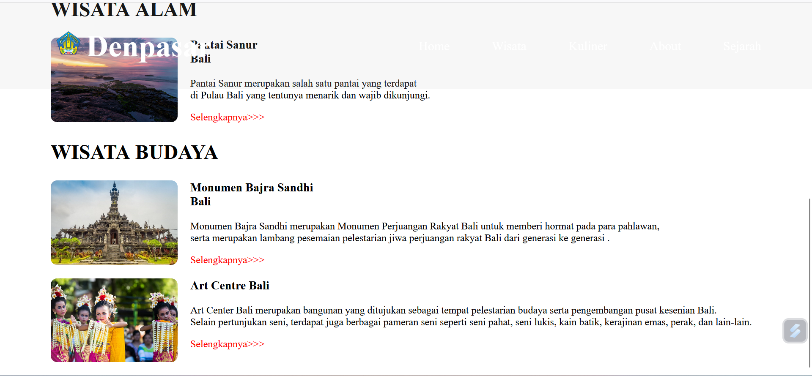
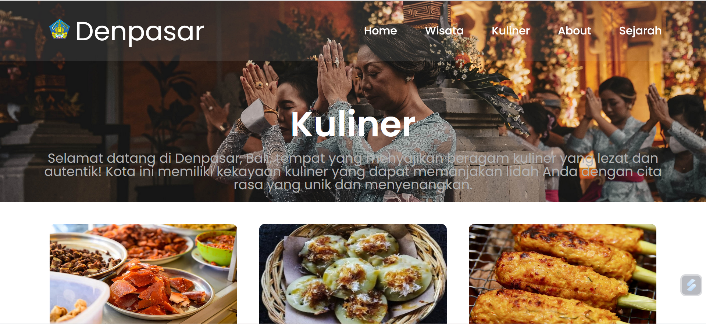
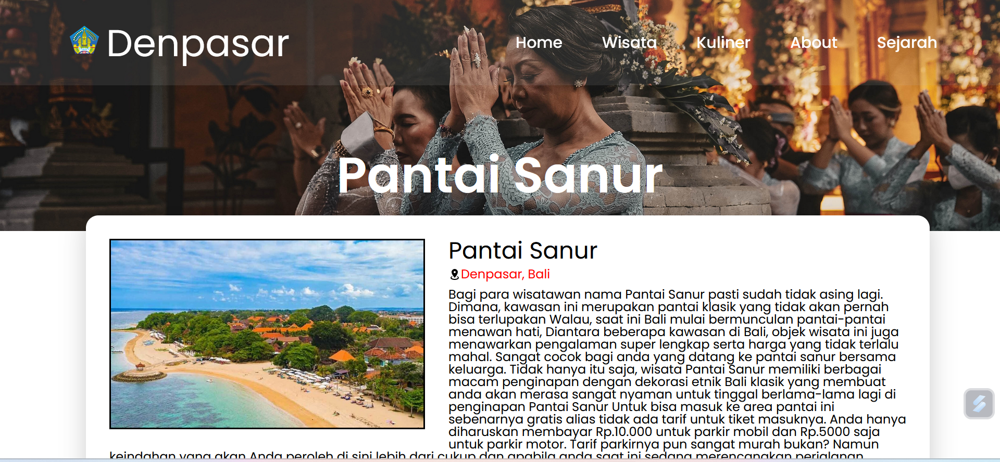
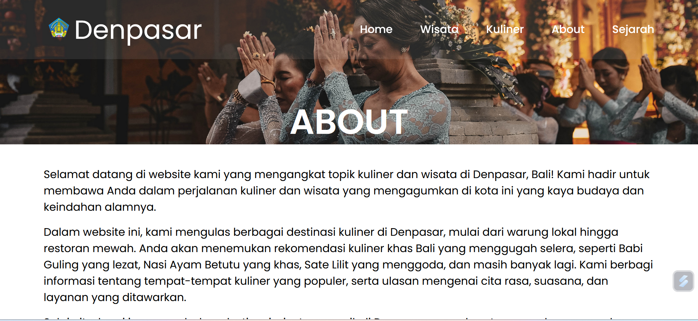
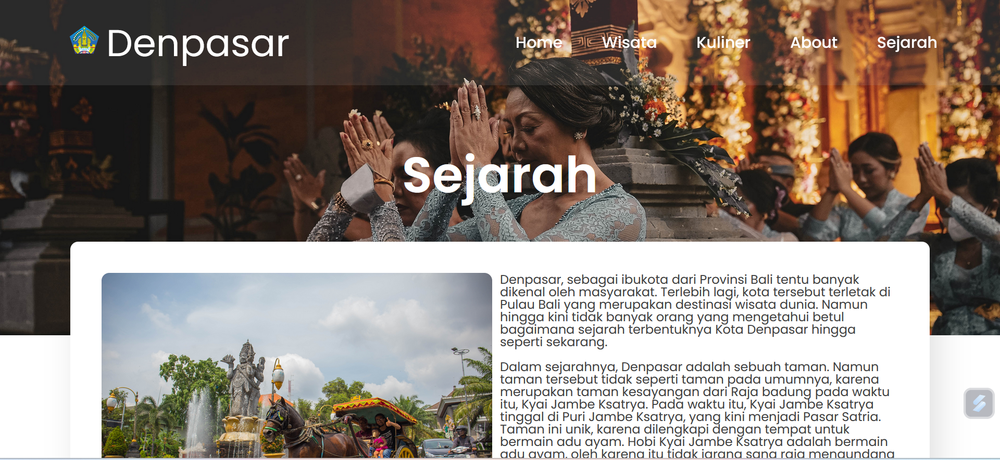

Denpasar Website
The Denpasar City website project is a digital initiative that aims to provide complete information and online services for residents and visitors of Denpasar City. The main goal is to increase information accessibility, simplify public services, and promote the city's potential in various aspects such as tourism, culture, and investment.
HTML CSS Javascript
Overview Project








